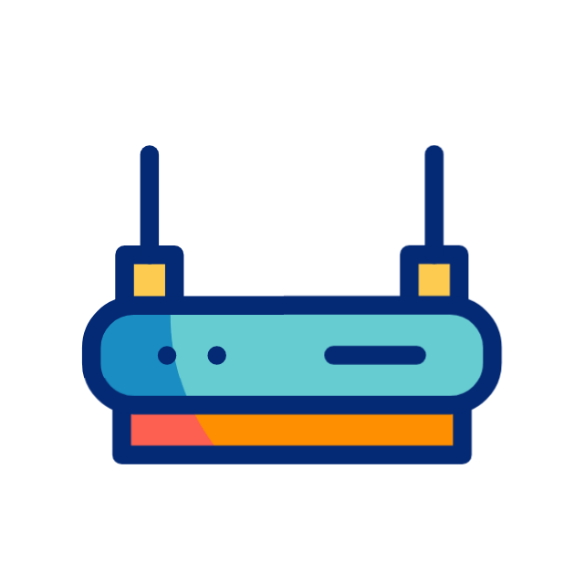

La Voz IP permite hacer llamadas a través de Internet enviando datos en forma de paquetes. En esta presentación, usaremos WhatsApp como ejemplo.
Equipo 1: El Teléfono Móvil
El teléfono móvil se conecta a la red Wi-Fi o de datos móviles. Transforma la voz en datos digitales que luego se envían a través de Internet.
Equipo 2: El Router
El router es responsable de enrutar el tráfico de datos desde el teléfono móvil hacia la red de Internet. Envía los paquetes de datos hacia el destino correcto.

Equipo 3: Servidores de WhatsApp
Los servidores de WhatsApp reciben los paquetes de datos y los procesan para enviarlos al destinatario correcto. También se encargan de la autenticación y seguridad de las llamadas.
Equipo 4: El Destinatario
El dispositivo del destinatario recibe los datos a través de la red y los convierte de nuevo en sonido, permitiendo que escuchemos la voz de la persona que llama.
Conclusión
Así funciona la Voz IP en WhatsApp: desde tu teléfono, pasando por el router y los servidores, hasta llegar al teléfono de la persona con la que hablas.